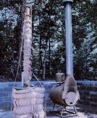
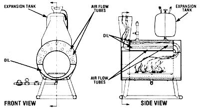
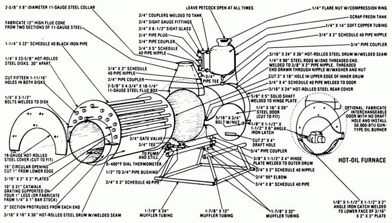
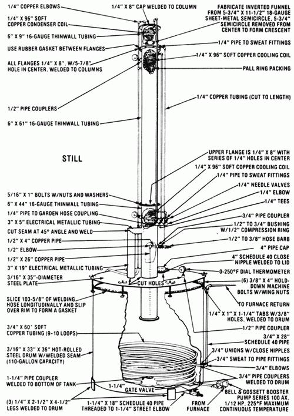

Now you can fire your still and heat your home... for very little cost!
One of the major drawbacks of thermal energy is the fact that it's often difficult (and expensive) to store effectively. (This unfortunate phenomenon is by no means limited to solar-derived heat, either ... it's common to all forms of "temperature" power.)
With this problem in mind, the fellows at MOTHER's research facility set out to build a home heating unit that would incorporate thermal storage capabilities and inexpensive operation . . . and they recently came up with an affordable, compact (and actually pretty ingenious) woodburning furnace that just about any tinkerer with welding experience could cobble together in a weekend!
A BACKYARD DEEP-FRY
Put simply, MOTHER's heating device is little more than a woodstove surrounded by an oil-filled chamber which is specifically designed to expose a maximum amount of surface area to the heat source. This optimum thermal transfer is accomplished not only by encircling the cylinder-shaped firebox with the viscous liquid (we use Exxon's Caloria HT-43, which has been formulated to handle high temperatures), but by cleverly routing the stove's smoke (and hence its normally wasted heat) directly through the oil reservoir via a series of 1-1/4 "-diameter tubes.
Now some of you may question our use of oil-rather than free-for-the-taking water-as a thermal storage medium . . . but there are several good reasons why the choice was made:
[1] Oil-like water-can hold heat for an extended period of time.
[2] The boiling temperature of oil is more than twice that of water ... therefore a lot more heat can be fed into it-at atmospheric pressure-before a molecular change occurs.
[3] Oil is noncorrosive, and thus its use results in a longer life span for the furnace and for the plumbing connected to it.
Another important point to remember (for reasons of both safety and legality) is that, although MOTHER's oil-heating fur nace may look like a boiler, it is definitely not one . . . since it's open to the air and operates at atmospheric pressure. This means-in essence-that those laws, inspections, and other requirements that apply to steam boilers do not pertain to this heater. (Incidentally, because any water within the oil will be vaporized-and vented-long before the heat storage medium reaches its operating temperature, neither condensation nor the accidental introduction of water into the oil reservoir will pose a problem.)
ONE OF MANY APPLICATIONS
Naturally, the furnace described here could be used-in conjunction with a heat exchanger-for space heating, water heating, evaporation-based cooling or refrigeration, or for any of a number of other purposes. However, because MOTHER's alcohol researchers needed a compact energy source to provide heat for fermentation and distillation, we've chosen to feature both the furnace and a modified distillery together ... so that people who choose to do so can build the two projects to work as a "team".
The drawings accompanying this article are probably all but self-explanatory, but we do have a few tips that will make the task of fabricating your equipment somewhat easier. In most cases, both of the furnace's "drums" will have to be formed-from flat plates-at your local steel supply house (unless you just happen to have on hand two tanks of about the required sizes).
By the same token, the perforated end plates that seal the extremities of the oil chamber should be drilled simultaneously, to ensure that the holes line up perfectly. (As an alternative to cutting the openings yourself, you'll find that almost any sheet metal shop will stamp the plates, accurately, at a reasonable cost.) The chimney stack may also be awkward to piece together, since the fitting involves joining a circular collar to a foursided opening . . . so this component, too, might best be made by a professional.
(As far as the still is concerned, just about any steel vat will suffice for the mash tank . . . as long as it's sealed effectively at its lid. We made the entire top removable, for easy cleaning and to facilitate installation of the heat exchanger coils. The three condenser coils within the column should also be carefully formed . . . using the tube roller detailed in our illustration. Simply insert one end of your eight-foot section of tubing into the indicated notch and roll it around the center hub-keeping it flush with the base plate-until your spiral's outer edge reaches the dotted line. Then repeat the procedure, starting at the uncoiled end of the pipe. When both halves are formed, merely pull the ends apart, accordionstyle, till the coiled condenser is about eight inches long.)
AND IT WORKS LIKE A CHARM!
We're happy to report that the furnace design has proved itself to be sound, and that the unit is impressively efficient. Flue temperatures average below 400°F, which means that a good deal of heat is going into the oil rather than up the chimney. And, as long as the welds aren't defective and oil temperatures never exceed the liquid's flash point (435°F), the apparatus is perfectly safe.
So far, we've been nothing but pleased with the way our little backyard nonboiler works . . . but we've got a few ideas up our collective sleeve which-we hope-will increase the practicality (and/or lower the operating cost) of the furnace. These include burying the container in a sand pit to minimize loss of heat, installing an oil-burner unit-on an interchangeable door-to provide maintenance heat when the operator has to be away, and even experimenting with corn as the sole source of raw material to feed the furnace/still combination. (We hope the kernels will provide oil for heat storage plus starch and sugar for alcohol production, while the stalks and cobs serve as fuel for the firebox!)
Meanwhile, because of the heating unit's very affordable cost (about $300) and the fact that it can burn minimal amounts of fuel and still provide useful energy, this homemade furnace might just solve a lot of people's winter warming problems
Remember, if you intend to use these drawings to fabricate an alcohol-producing still, a permit from the United States Bureau of Alcohol, Tobacco, and Firearms is required before you can operate your distillery. Write to your local regional ATF office for information . . . and please don't distill without one, for your sake and for the sake of others interested in making their own renewable fuel!
|
 |
 |
 |
|
 |
|
|